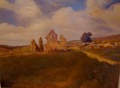
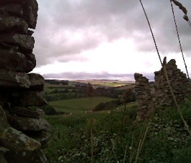
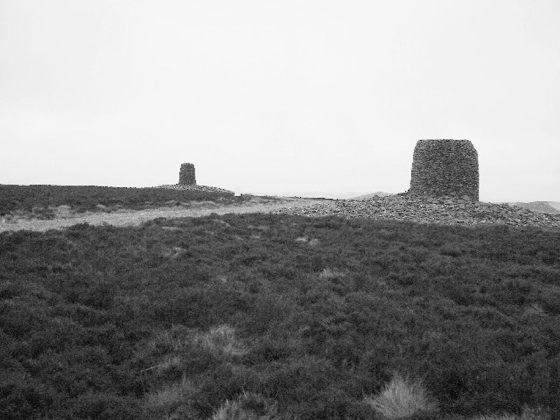

Edgars of berwickshire


The Edgars have been in Berwickshire for a very long time and it is likely that our line derived from a humble branch of the Edgars of Wedderlie who have been there since at least the 13th C as our recorded forebears lived within 10 miles of Wedderlie. Wedderlie was once a fortalice of 6000 acres, chiefly moorland extending towards the Lammermoor Hills. “Today no Edgars are to be found at Westruther, but a few of that name, mostly in humble positions, are scattered across the Border counties. (Edgar, James. 1873)
The Berwickshire Butterflies Project focussed on Wester Windshiel or Windy Winshiel as it had been known and found the following information on John Edgar and his family who lived there.
‘The Window Tax records for 1798/99 show that John Edgar lived at Wester Windshiel and that he was liable for a tax on a house with not more than six windows. At the same time John and Thomas Haig also lived there and paid tax on windows and horses. Baptism records for Duns Parish include those for the three children of John Edgar (shepherd at Wester Windshiel) namely Mary (1788), Anne (1791) and James (1797); all three baptisms were witnessed by Thomas Haig and an Alexander Dodds.

![What you should know
John Edgar was born at Cranshaws, Berwickshire about 1754. He was the son of James Edgar and mary robertson. During his life he worked as a shepherd on Wester Windshiel where he lived with his wife mary fortune and their 3 children, Mary, Ann and James. John Edgar died aged 76 on the 17th April 1830 and Mary died aged 77 on the 16th March 1843.
James Edgar was born 11 Sept 1797 and baptised in Duns parish on the 25th September 1797. James became a blacksmith in Chirnside and married mary dickson on the 19th November 1821. They had 5 sons; John, James, Adam, Gideon and William. James senior died on 6 Feb 1858 in Chirnside and Mary died in Ayton, Berwickshire on 20 Feb 1868, she had been paralysed for 13 years.
gideon Edgar was born on the 28th July 1836 and baptised in Abbey St. Bathans, Berwickshire. He was a stone mason. He married margaret moyes on the 28th June 1861 at St. Cuthbert’s, Edinburgh. Her father Alexander was also a stone mason.
Gideon and Margaret had 7 children and john edgar was their 3rd son. His two older brothers also became stone masons but John became a tool maker and emigrated to Australia.
Gideon died in Newington, Edinburgh in 1888, he was only 52. Margaret died in 1907 and was my namesake.](Edgars_of_Berwickshire_files/shapeimage_3.png)
Windy Winshiel Ruins , Berwickshire, Scotland
Windy Winshiel by Arthur Blair
In days of yore, when deeds were rife,
And wars on banks and braes,
And nought but strife on every side,
Which brought on dule and waes,
The Anglo-Saxons restless band
Had crossed the river Tweed;
Up for the hills of Lammermuir,
Their hosts marched on with speed.
Our Scottish warriors on the heath,
In close battalion stood,
Resolved to set their country free,
Or shed their dearest blood.
A chieftain from the Saxon band,
Exulting in his might,
Defied the bravest of the Scots
To come and single fight.
Old Edgar had a youthful son,
Who led the Scottish band;
He with the Saxon did agree
To fight it hand to hand.
The armies stood in deep suspense,
The combat for to view;
While aged Edgar stepped forth,
To bid his son adieu.
Adieu! Adieu! My darling son,
I fear that ye be lost;
For yester night my troubled mind,
With fearful dreams was toss’d.
I dream’d your mother’s parted shade
Between two armies stood,
A lovely youth on either hand,
Their bosoms streaming blood.
My heart will break if you should fall,
My only prop and stay;
Your brother when in infant years,
The Saxons stole away.
Delay it not, young Edgar said
But let the trumpets blow;
You soon shall see me prove your son,
And lay your boaster low.

The trumpets raised with deafening clang,
The fearful onset blew;
And when the chieftain stepped forth,
Their shining swords they drew
Like lions in a furious fight,
Their steeled falchions gleam,
Till from our Scottish warriors side
Fast flowed a crimson stream.
With deafening din the coats of mail
The deadly blows resound;
At last the Saxon warrior
Did breathless press the ground.
As aged Saxon came to view
The body of his chief;
His streaming eyes and downcast look,
Bespoke a heart of grief.
He’s dead, he cried, the bravest youth
E’re sprung from Edgar’s line;
I bore him from the Scottish coast,
And made him pass as mine.
And in the days of youthful prime,
He was my pride and boast;
For oft to victory he has
Led the Saxon host.
Old Edgar heard the Saxon’s moan,
His cheeks grew deadly pale,
A great convulsion shook his frame,
His nerves began to fail.
Frantic he tore his aged locks,
With time and trouble grey;
And faintly crying, My son, my son!
His spirit passed away.
The Scottish chief as his father fell,
He raised his fading eye,
And tore the bandage from his wounds,
To let life’s stream run dry.
He kissed his sire and his brother’s wounds,
That ghastly were and deep;
And closed him in his folding arms,
And fell on his long, long sleep.
Not the least of the romantic legends associated with the Scottish House of Edgar is that of the Twinlaw Cairns. The two cairns are said to commemorate the death, by each other's hands, of the twin-brothers Edgar, who, ignorant of their kinship, resolved to settle by single combat the battle impending between the Scots and the Saxon invaders. A ballad, entitled the Battle of Twinlaw, the worst perhaps that was ever composed, is quoted in the New Statistical Account (1834) as having `been known here for at least a century and a half.' (John Bartholomew, Gazetteer of the British Isles (1887)
Today the twin cairns stand boldly silhouetted on top of the bleak but wild and picturesque moor land of the Lammermuir Hills.
The Twinlaw Cairns, Lammermuir Hills Kevin Rae
The Twinlaw Cairns of Wedderlie
What I think!